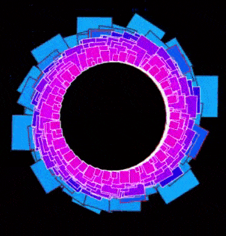
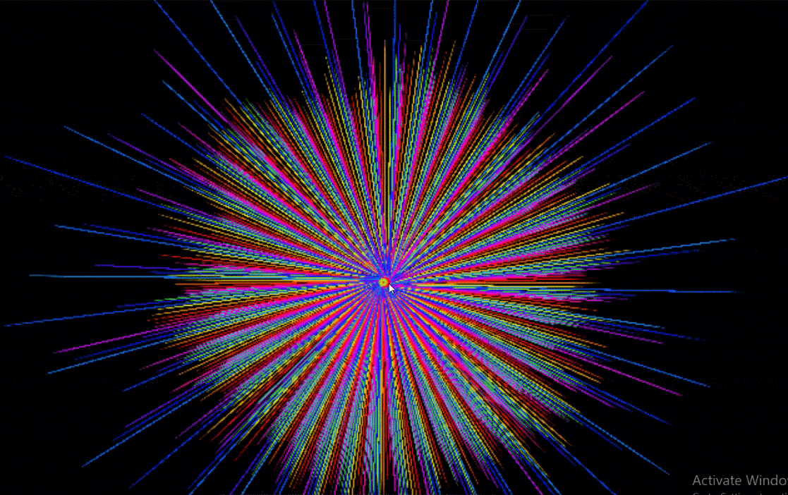

SHOW US YOUR TASTE Are you prone to punk? mainstream rock? or maybe a deliberate fan of Frederic Chopin. In the end, it doesn't even matter. As long as you have, through legal means, adquired an audio file copy of your desired song, it is all good. Polaris will do the rest. If you hesitate whether your file is supported or, unfortunately enough, not supported, you should better check the Frequently Asked Questions for further information on the topic. Or you can go right away by clicking the last available button on this webpage.

EXPRESS YOURSELF We all love when the party you are in gets more and more interesting. With Polaris, the same thing happens. It gets better with time. We may have as well dedicate ourselves to cultivating wine. Back to the features, there are currently four supported ways of seeing what you are hearing. That sounds amazing, doesn't it? You can see which of the visualizers suits best your so-well-developed taste. If you put a heavy song, either you will like your CPU working at a more intense rate or you would like to see a complete round-up of all frequencies being represented in different shapes, colors, sizes and lengths. Just a tip, you can actually try this out by downloading something called a "full-sweep" or frequency sweeping. This will give you the idea what happens when all bands are active. But please don't blast it over your speakers, such files can be amplitude inducing and may cause harm at high volume rates.
ENJOY THE MOMENT Once the show is over... it is not really over! You can keep the end result of how your song looked like with our brand-new, flagship, latest, most aclaimed visualizer of the spectrum (no pun intended), the last one. Simply right click it once the song is over so you can either see it fullscreen on a new web browser tab, and if you like it, save it along with other files you may have in your drive. You can set the end result as your default wallpaper the moment you log in. Or you can paint it as a work of art, it is up to you! Talking about enjoying the moment, your privacy is also safe with us. You can stay in our site for whenever you needed and we will not be tracking you, since we don't use cookies.
